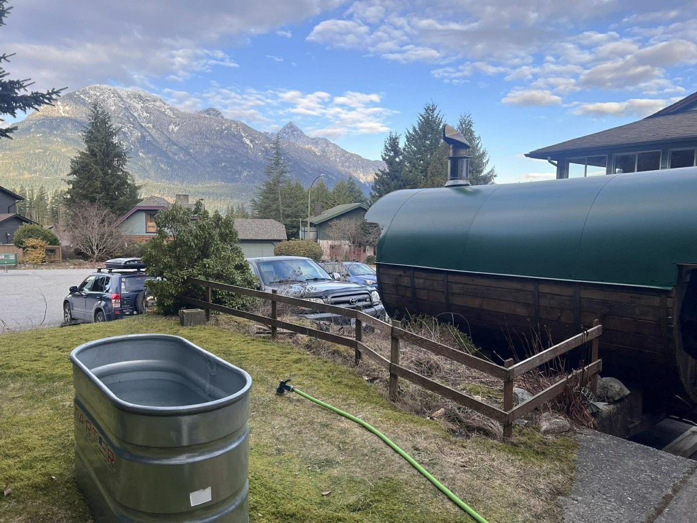

A wood-fired sauna is simple: get hot, cool off, rest, repeat. But if you've only ever sat in a gym sauna for five minutes, a real session can feel like a mystery. Here's how to do it, start to finish.
Before you start: let the fire do its work
A wood-fired barrel sauna takes time to heat. Light the stove, keep it fed, and give it time to come up to temperature; the startup guide that comes with the rental walks you through it. Our sauna can reach about 90°C, but you don't need it maxed out to have a great session.

The basic round: hot, cold, rest
- Hot (8 to 15 minutes). Sit on a towel. The upper bench is hotter, so start low. Leave when you've had enough, not when the clock says so.
- Cold (30 seconds to 2 minutes). A cold plunge, a cold shower, a lake or just cool air. Breathe slowly through the first few seconds; it gets easier.
- Rest (10 to 15 minutes). Sit somewhere comfortable, wrap up if it's chilly, drink water. This is the part most people skip, and it's the best bit.
Most people do two to four rounds. There's no prize for staying in longest.
What about the steam?
Ladling a little water onto the hot stones makes a burst of steam (the Finnish word is löyly). It makes the room feel much hotter for a minute. Ask everyone before you pour, and add a little at a time.
The cold plunge
The rental comes with a cold plunge tub. It's delivered empty, so plan how you'll fill it, and mention it in your booking request if you're not sure. Get in slowly, keep your head out of the water, and stay in only as long as feels good. Coming out of the cold and back into the heat is the feeling people chase.

What to bring
- Swimwear (or not, if it's private and everyone's comfortable)
- A towel to sit on, plus a robe or warm layer for rest breaks. Towel and robe kits are available as an add-on.
- A big water bottle
- Sandals for walking between the sauna and the plunge
- A felt or wool sauna hat. It keeps your head cooler so you can stay in comfortably. You can add one to your booking for $5.
A few safety basics
- Drink water before, during and after. You sweat more than you think.
- Skip the alcohol until you're done. Heat and drinks don't mix.
- If you're pregnant or have a heart condition, low or high blood pressure, or another medical condition, check with your doctor before using a sauna or cold plunge.
- Get out if you feel dizzy, nauseous or unwell, and never sauna or plunge alone.
- Keep the fire contained and the area around the stove clear.
Try it in Squamish
Mamquam Sauna delivers the wood-fired barrel sauna and cold plunge to your place in Squamish, Whistler or Pemberton. A private 24-hour session is $325 and fits 8 people comfortably, with delivery, setup and firewood included. See the mobile sauna rental page for details.
How booking works
Hit Book Now, pick your dates and any add-ons, and send a request. Nothing is charged to send it, and you can include questions. Your dates are held for 48 hours while Glenn reviews the request. Once it's approved you'll get an email link to pay a $100 deposit, which confirms the booking. The balance is sent as a payment link three days before your session.
More reading: Sauna Party in Squamish: Birthdays, Bachelorettes & Group Weekends · Squamish sauna guide